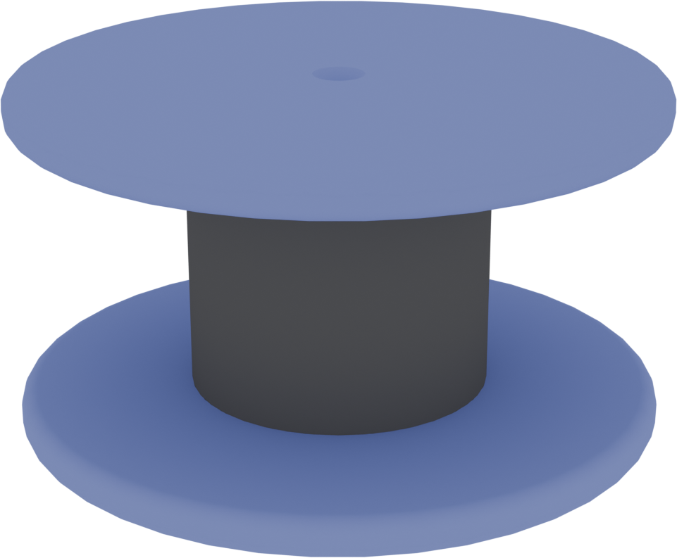
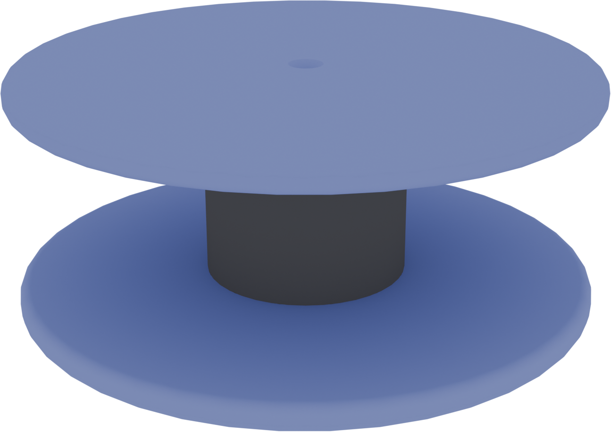
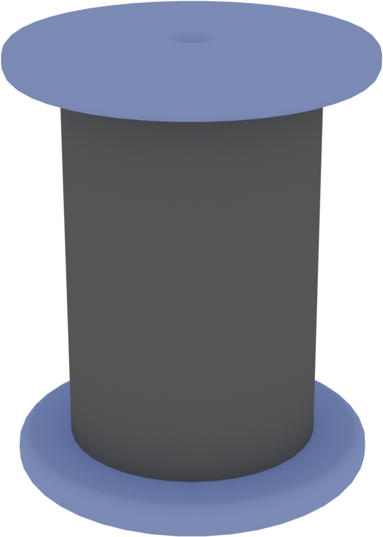

Qu'est-ce que Robotique CRC
La Robotique CRC est un organisme à but non lucratif fondé en 2001 par des enseignants et de jeunes professionnels passionnés. Sa mission est d'encourager l'interdisciplinarité à travers la robotique, en créant un pont entre les domaines STIM (science, technologie, ingénierie et mathématiques) et les arts, les langues et la communication.
Qu'en est-il de la compétition
La compétition de robotique CRC est un défi multidisciplinaire qui s'étend sur environ quatre mois. Durant cette période, les différentes écoles qui y participent doivent :
- Créer une vidéo
- Monter un kiosque
- Faire un tutoriel
- Construire un robot
L'aventure se termine par une finale de trois jours. Les différentes écoles se rassemblent pour affronter leur robot, présenter leur kiosque et participer à une compétition de programmation.
LE JEU
But du jeu
Le but du jeu est d’amasser le plus de points possible en accomplissant différentes tâches avec le robot sur le terrain de jeu. Chaque tâche réussie rapporte un certain nombre de points, et l’équipe avec le plus de points à la fin du match remporte la victoire.
Le terrain de jeu
Le terrain de jeu est un rectangle de 8 cases par 5. Il comporte 6 stations de réparation et 3 moteurs par équipe (pour un total de 6). Une zone de pièces supplémentaires pour chaque équipe se trouve également à une des extrémités du terrain.


Les pièces de jeu
Dans le jeu, il existe trois types de pièces:

Ventilateur

Coeur

Turbine
Il existe également trois couleurs de pièces:
- Pièces Bleues et Jaunes : Pièces d'équipe pour marquer des points.
- Pièces Rouges : Pièces neutres à utiliser avec les stations de réparation.
Les stations
Le terrain comporte deux types de stations : les moteurs et les stations de réparation. Chaque station peut accueillir jusqu'à trois pièces, correspondant aux trois types disponibles dans le jeu.
Les moteurs
Les moteurs rapportent des points selon le nombre de pièces de la couleur de l’équipe qui y sont placées :
- 1 pièce : 50 points
- 2 pièces : 100 points
- 3 pièces : 250 points
Les stations de réparation
Elles permettent d’échanger une pièce neutre (rouge) contre une pièce de la couleur de l’équipe. Cela aide à obtenir plus de pièces à placer dans les moteurs ou dans la zone de pièces supplémentaires.
Les zones de pièces supplémentaires
Chaque pièce placée dans cette zone rapporte 40 points supplémentaires.
Les bonus
Un aspect qui est très important dans le jeu est la présence de 2 bonus. Ces bonus se rapportent tous les deux à la zone de pièce supplémentaire :
- Bonus de hauteur : L’équipe qui a la tour de pièce la plus haute se voit attribuer un bonus de +60%.
- Bonus de quantité : L’équipe qui a le plus de pièces dans la zone supplémentaireobtient un bonus de +40%.